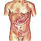
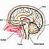

OncoGuía - Tratamientos contra el cáncer
-
 Adenoma de HipófisisGlándula situada en la silla turca
Adenoma de HipófisisGlándula situada en la silla turca -
 ColonLa última porción del aparato digestivo
ColonLa última porción del aparato digestivo -
 Cuello Uterino/Cérvixparte más inferior del aparato rep. femenino
Cuello Uterino/Cérvixparte más inferior del aparato rep. femenino -
 Endometrio/úteroórgano hueco, situado en la pelvis.
Endometrio/úteroórgano hueco, situado en la pelvis. -
 Esófagotubo hueco que transporta los alimentos
Esófagotubo hueco que transporta los alimentos -

Estómagositúado en la parte alta del abdomen
-
 GliomasSe produce en el cerebro o en la médula espinal
GliomasSe produce en el cerebro o en la médula espinal -
 MamaGlándula destinada a la producción de leche
MamaGlándula destinada a la producción de leche -
 Médula Espinalel tejido nervioso más extenso del cuerpo
Médula Espinalel tejido nervioso más extenso del cuerpo -
 Meduloblastomatumores malignos en la fosa posterior del cerebro
Meduloblastomatumores malignos en la fosa posterior del cerebro -
 MelanomaCrecimiento de los melanocitos
MelanomaCrecimiento de los melanocitos -

MeningiomasTumor cerebral usualmente benigno
-
 No MelanomaEl tumor más frecuente del ser humano
No MelanomaEl tumor más frecuente del ser humano -
 PáncreasGlándula que participa en el proceso de la digestión
PáncreasGlándula que participa en el proceso de la digestión -
 PróstataGlándula sexual exclusiva de los varones
PróstataGlándula sexual exclusiva de los varones -
 RectoLa última porción del aparato digestivo
RectoLa última porción del aparato digestivo -
 Vejigaórgano situado en la parte baja de la pelvis
Vejigaórgano situado en la parte baja de la pelvis
Cáncer de Colon
Tratamiento
Cirugía
Es el tratamiento más habitual del cáncer de colon y consiste en la extirpación de la lesión y de los ganglios linfáticos adyacentes. El tratamiento quirúrgico depende del tamaño y del estadio de la enfermedad.
En los estadios más iniciales se realiza mediante Escisión local. Esta intervención consiste en la realización de una colonoscopia para localizar el tumor y realizar una incisión para extraer la lesión sin necesidad de realizar un abordaje a través del abdomen.
Si la lesión fuera de mayor tamaño, se realizará una Resección parcial del colon, extrayendo la lesión con margen de seguridad de tejido sano, y realizando una anastomosis (unión) de los dos bordes sanos del colon. Así mismo, en estos estadios, se suelen resecar ganglios linfáticos adyacentes a la lesión. La cirugía del cáncer del colon con anastomosis se puede realizar mediante cirugía abierta o bien mediante laparoscopia. Se extirpa la parte del colon con cáncer y tejidos sanos circundantes, luego se unen los extremos del colon sanos previamente seccionados. Cuando no se puede realizar la anastomosis en el mismo procedimiento quirúrgico, el cirujano realizará una colostomía temporal, que es practicar una abertura que comunicará con el extremo proximal de la parte del colon resecado, colocándose una bolsa alrededor de la apertura (estoma) para contener las heces, hasta que se pueda realizar la anastomosis de los dos extremos sanos de colon, en un segundo tiempo. Cuando esta anastomosis no es posible, la colostomía será permanente. Por último, la pieza extraída, se analiza para estudiar las características de la lesión y completar el estadiaje de la enfermedad.
Quimioterapia
Cuando la lesión tumoral tiene un poder de invasión mayor a nivel del colon o bien ante la existencia de factores de riesgo o afectación de ganglios linfáticos, es necesario completar el tratamiento con tratamientos adyuvantes (complementarios), siendo el más frecuente la quimioterapia, administrándose por vía oral o intravenosa, utilizando distintos esquemas de fármacos en función del estadio de la enfermedad, de la edad y del estado general del paciente. Cuando la enfermedad ha invadido órganos en otras localizaciones (hígado, pulmón, huesos, etc.) se puede comenzar tratamiento con Quimioterapia para conseguir reducción de las lesiones y valorar posteriormente el abordaje quirúrgico.
Tratamiento con radiaciones
El papel de la radioterapia adyuvante en el cáncer de colon es controvertido, sin embargo, existe un gran número de pacientes oligometastásicos (pacientes con enfermedad oncológica estable que tienen un afectación en otros órganos aunque en un pequeño número de metástasis (pulmón, hígado, cerebro, huesos…) en los que la radioterapia pudiera conseguir el control local en estas localizaciones, utilizando para ello, técnicas de Radioterapia Guiada por Imagen-IGRT-Tomoterapia, Radioterapia Robotizada Guiada por Imagen-Cyberknife, que consiguen administrar una alta dosis con una alta precisión y escasos efectos secundarios, siempre y cuando los tratamientos de rescate clásicos no se pudieran administrar o fallaran.
Así mismo, el papel analgésico de la radioterapia se ha venido usando para controlar síntomas derivados de la enfermedad oncológica, como el dolor o sangrado que no se puede controlar con otros tratamientos.
Terapia Dirigida
Se basa en el uso de algunos medicamentos que identifican las células cancerosas específicas. Consiste en el uso de anticuerpos monoclonales que se identifican a las células cancerosas o sustancias derivadas de las mismas, fijándose a las mismas e impidiendo su crecimiento o bien, provocando su destrucción. Estas sustancias se pueden administrar con los tratamientos sistémicos clásicos o de manera aislada.
Pronóstico
El desarrollo tecnológico de los últimos años ha permitido una mejora en el diagnóstico y tratamiento del cáncer de colon. La supervivencia global en España a 5 años tras el diagnóstico, sin tener en cuenta los distintos factores pronósticos es de aproximadamente un 54%.
Los resultados de supervivencia a los 5 años en función del estadio oscilan entre un 90-92% en los estadios más iniciales, y un 8% si el paciente presenta diseminación a otros órganos.
En gran parte de los pacientes, que al inicio presentan enfermedad avanzada y no operable, pueden convertirse en pacientes con enfermedad resecable tras quimioterapia, incluso las metástasis, lo que mejora su supervivencia global de forma importante.
Aspecto Psico-Oncológico
La supervivencia y la calidad de vida del paciente con cáncer de colon han mejorado en la última década y la tendencia continúa gracias a los avances en el conocimiento de la biología del cáncer, en las técnicas de diagnóstico y en las alternativas terapéuticas.
La localización del tumor y el tratamiento quirúrgico específico (colostomía) van a condicionar en mayor o menor grado el funcionamiento físico y emocional del paciente. En general, las personas intervenidas de cáncer de colon hacen una vida normal en todas las facetas de la vida: en el trabajo, en las relaciones con la familia y amigos, en el tiempo de ocio y deporte, en los viajes, en la vida sexual...
Únicamente aquellas personas portadoras de una bolsa encuentran algún tipo de limitación, especialmente en los primeros momentos por el ajuste al estoma y las alteraciones en la imagen corporal, pero, en ningún caso, esa circunstancia les impide llevar una vida normal. Reacciones emocionales de inseguridad, preocupación y dudas ante el diagnóstico y los efectos de los tratamientos son normales y frecuentes. Compartirlas con el equipo médico y el entorno más cercano puede ayudar al paciente a evitar situaciones de aislamiento y mejorar la comunicación con su entorno.
Si necesita más información sobre cómo afrontar un diagnóstico de un cáncer de colon, le ofrecemos unas pautas que le podrán ayudar a asumir y a adaptarse a la nueva situación. Puede consultarlas en el apartado de Apoyo Psicológico.
Asimismo, si quiere conocer las experiencias y testimonios de personas que han superado esta enfermedad puede consultar en Curados de cáncer